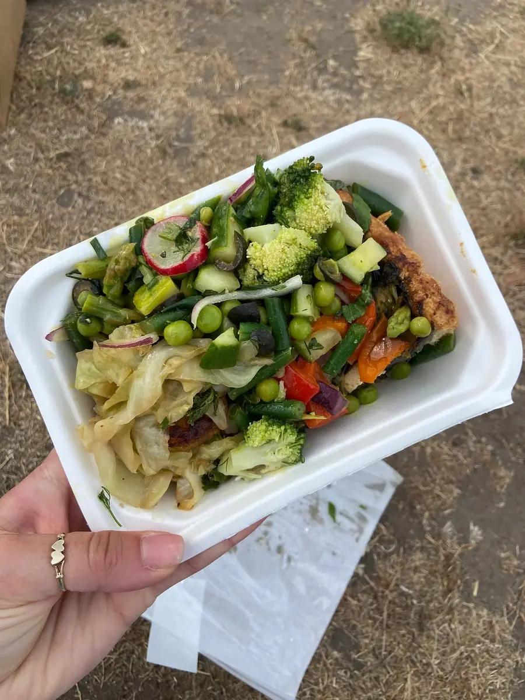
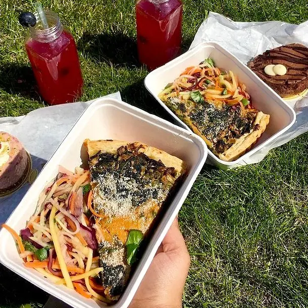
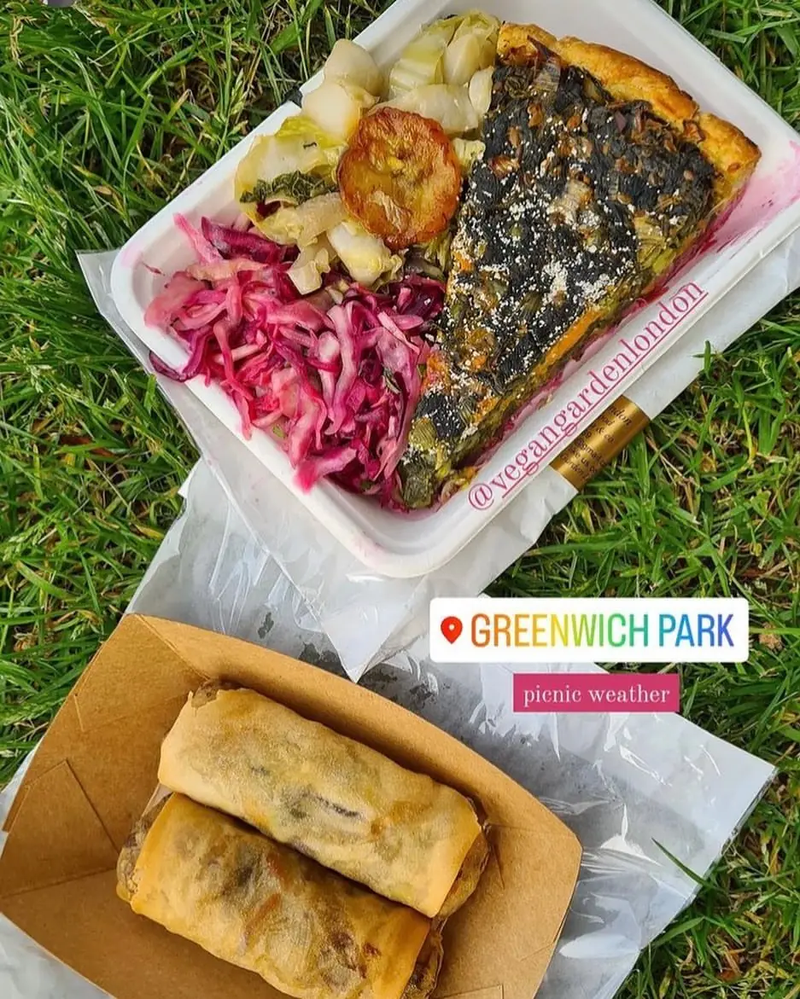

Visit
Under theglass roof
Vegan Garden trades inside Greenwich Market, in the heart of Greenwich, every Friday, Saturday and Sunday.
Fridays, Saturdays & Sundays
- Address
Greenwich Market, College Approach
London SE10 9HZGet directions in Google Maps ↗ - Trading days
Friday · Saturday · SundayFollow Instagram for the weekend's spread and any changes.
- Phone
- Payment
Cash and card
- Allergies
Please tell a member of staffCakes are labelled with their allergens.
Finding the table
Three things to look for
The market roof
Head into Greenwich Market off College Approach and walk under the big glass-and-iron canopy.
The cream sign
Look up for “Vegan Garden” painted in green script, strung with pastel bunting.
The leaf-print table
A green leaf-print cloth, the menu on a red ribbon, and more food than seems possible.
After lunch
Box in hand, head for the park
Greenwich Park is a short stroll from the market. Customers love taking their boxes up for a picnic on the grass, with a slice of cake for afters.
Choose your box

